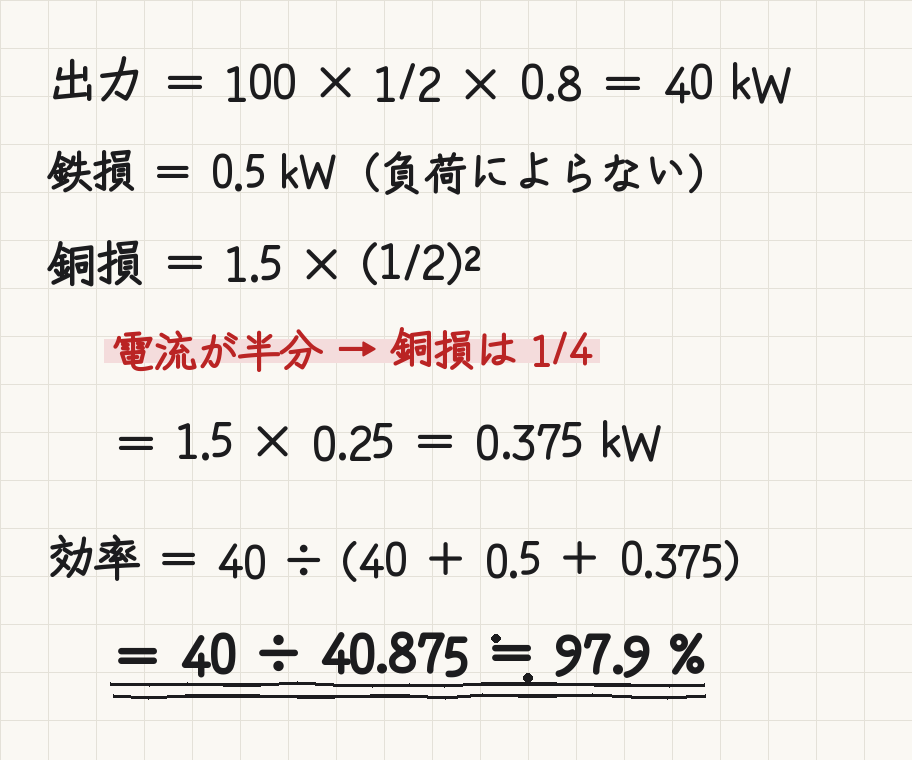

変圧器の効率の求め方：鉄損と銅損は、負荷でどう変わるのか
三相と変圧器の全体像 9章のうち、このページは ⑤ 損失と効率
損失を足して、出力で割る。変圧器の効率の式は短いのに、負荷が全負荷でないときに、銅損をいくつにするかで手が止まります。
先に答え効率 ＝ 出力 ÷（出力 ＋ 鉄損 ＋ 銅損）。負荷率を α とすると、出力は α × 容量 × 力率、鉄損は負荷によらず同じ、銅損は α の2乗 × 全負荷の銅損です。負荷が半分なら、銅損は4分の1になります。
どこで止まるか
止まる段立式銅損は「電流の2乗 × 巻線の抵抗」なので、電流が α 倍なら α の2乗倍になります。この途中が省かれ、効率の式だけが示されがちです。
負荷が半分なので、銅損も半分にして 1.5 × 0.5 ＝ 0.75 kW としてしまう。正しくは、1.5 × 0.5 × 0.5 ＝ 0.375 kW です。
鉄損と銅損は、何で決まるか
鉄損は、鉄心の中で磁気の向きが変わるたびに出る損失です。鉄心の磁気の強さは、かかる電圧で決まります。電圧は負荷によらずほぼ同じなので、鉄損は負荷が軽くても重くても同じです。このため、無負荷損とも呼ばれます。
銅損は、巻線の抵抗に電流が流れて出る熱です。
銅損 ＝ 電流 × 電流 × 巻線の抵抗
負荷率 α のとき、電流 ＝ α × 全負荷の電流
銅損 ＝ α × α × 全負荷の電流 × 全負荷の電流 × 巻線の抵抗
銅損 ＝ α² × 全負荷の銅損
負荷率 α のとき、電流 ＝ α × 全負荷の電流
銅損 ＝ α × α × 全負荷の電流 × 全負荷の電流 × 巻線の抵抗
銅損 ＝ α² × 全負荷の銅損
このため、銅損は負荷損とも呼ばれます。負荷が半分なら4分の1、4分の3なら16分の9になります。
数値で確かめる
容量 100 kV·A、鉄損 0.5 kW、全負荷の銅損 1.5 kW、力率 0.8 の変圧器で、負荷が半分のときの効率を出します。
出力 ＝ 1/2 × 100 kV·A × 0.8 ＝ 40 kW
鉄損 ＝ 0.5 kW
銅損 ＝ (1/2)² × 1.5 ＝ 0.25 × 1.5 ＝ 0.375 kW
損失の合計 ＝ 0.5 ＋ 0.375 ＝ 0.875 kW
効率 ＝ 40 ÷ (40 ＋ 0.875) ＝ 40 ÷ 40.875 ≒ 0.979 → 97.9%
鉄損 ＝ 0.5 kW
銅損 ＝ (1/2)² × 1.5 ＝ 0.25 × 1.5 ＝ 0.375 kW
損失の合計 ＝ 0.5 ＋ 0.375 ＝ 0.875 kW
効率 ＝ 40 ÷ (40 ＋ 0.875) ＝ 40 ÷ 40.875 ≒ 0.979 → 97.9%
同じ変圧器の全負荷の効率は、80 ÷ (80 ＋ 0.5 ＋ 1.5) ＝ 80 ÷ 82 ≒ 97.6% です。銅損を半分の 0.75 kW にした誤りの答えは、40 ÷ 41.25 ≒ 97.0% になり、全負荷より低く出ます。
確かめ：損失の合計（0.875 kW）は、鉄損（0.5 kW）より大きく、全負荷の損失（2.0 kW）より小さい。出力より大きな損失や、鉄損より小さな損失の合計が出たら、式を見直します。

変圧器の効率の式のまとめ
出力 ＝ 負荷率 α × 容量 × 力率
鉄損（無負荷損）：負荷によらず同じ
銅損（負荷損）＝ α² × 全負荷の銅損
効率 ＝ 出力 ÷（出力 ＋ 鉄損 ＋ α² × 全負荷の銅損）× 100〔%〕
鉄損（無負荷損）：負荷によらず同じ
銅損（負荷損）＝ α² × 全負荷の銅損
効率 ＝ 出力 ÷（出力 ＋ 鉄損 ＋ α² × 全負荷の銅損）× 100〔%〕
別の呼び方：損失から計算で出した効率を、規約効率と呼びます。負荷率は、利用率や負荷の割合と書かれることもあります。
容量 100 kV·A、鉄損 0.5 kW、全負荷の銅損 1.5 kW、力率 0.8 なら、全負荷で 97.6%、半分の負荷で 97.9% です。
確かめの1問
容量 50 kV·A、鉄損 200 W、全負荷の銅損 800 W の変圧器を、力率 1.0、負荷率 1/2 で使います。効率は何 % ですか（小数第2位まで）。
容量 50 kV·A、鉄損 200 W、全負荷の銅損 800 W の変圧器を、力率 1.0、負荷率 1/2 で使います。効率は何 % ですか（小数第2位まで）。
答え
出力 ＝ 1/2 × 50 kV·A × 1.0 ＝ 25 kW ＝ 25000 W。銅損 ＝ (1/2)² × 800 ＝ 200 W。損失の合計 ＝ 200 ＋ 200 ＝ 400 W。効率 ＝ 25000 ÷ 25400 ≒ 98.43%。この計算を順を追って解く本：第5巻の案内
最終更新：2026年11月17日